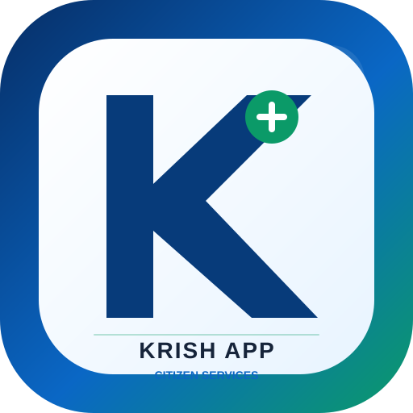

🏦
EPFO / UAN
UAN, PF और कर्मचारी भविष्य निधि की आधिकारिक सेवाएँ।
UAN Member Portal ↗EPFO Official ↗
Sarkari Yojana • Citizen Services
UAN, PF और कर्मचारी भविष्य निधि की आधिकारिक सेवाएँ।
UAN Member Portal ↗EPFO Official ↗EPF Passbook और claim से जुड़ी आधिकारिक सेवा।
Passbook ↗असंगठित श्रमिकों के लिए आधिकारिक e-Shram portal।
Official Portal ↗PM-JAY की पात्रता और आधिकारिक स्वास्थ्य सेवाओं तक पहुँच।
PM-JAY Official ↗India.gov Service ↗IGNOAPS और NSAP pension से संबंधित आधिकारिक जानकारी।
NSAP Official ↗myScheme ↗West Bengal Food & Supplies की राशन सेवाएँ।
Official Portal ↗आधार enrolment, update और अन्य official services।
UIDAI Official ↗PAN और Income Tax की आधिकारिक सेवाएँ।
Income Tax Official ↗सरकारी digital documents को access, share और verify करने की सेवा।
DigiLocker Official ↗कई Central और State Government services एक जगह।
UMANG Official ↗केंद्र और राज्यों की सरकारी योजनाएँ खोजने का official one-stop platform।
myScheme Official ↗DBT, Aadhaar-bank linking status और सरकारी लाभ transfer की जानकारी।
DBT Official ↗Driving Licence, vehicle registration, challan और transport services।
Parivahan Official ↗Passport application, appointment और status से जुड़ी official services।
Passport Seva ↗National Career Service पर jobs और employment services।
NCS Official ↗कई सरकारी scholarships के लिए official NSP portal।
NSP Official ↗किसानों के लिए PM-KISAN की official services।
PM-KISAN ↗Pradhan Mantri Awas Yojana (Urban) की official services।
PMAY Official ↗PMUY LPG connection और संबंधित official information।
PMUY Official ↗Basic bank account और financial inclusion की official जानकारी।
PMJDY Official ↗West Bengal के citizen certificates और online services का single-window portal।
WB e-District ↗West Bengal की अन्नपूर्णा योजना/भंडार से संबंधित जानकारी।
Official Portal ↗West Bengal की Kanyashree योजना की official information।
WB Official ↗Voter registration, correction, E-EPIC और voter-list search की official services।
ECI Voter Portal ↗